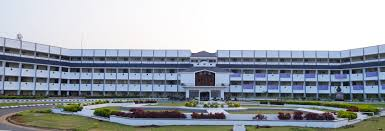

KSR College of Arts and Science
Admission Opens📚
You are the upcoming Scientist!
K.S.Rangasamy College of Arts and Science strives to provide quality education by imparting discipline, value, knowledge and skills. We provide a vast array of courses in Life Sciences, Humanities and Management Studies with Co-curricular activities to enhance the soft skills of the students and created an excellent learning environment with positive support and direction for the growth of our students.The College is known for its academic excellence and character building, providing learner-centred education with high integrity, ethics, professional and societal commitments.

🚀Physics Department🎓
| Lab Facility| Modern Library | Internships |
Mission
- ~To offer quality education in Physics by providing scientific inquiry and innovation.
- ~To kindle research interest by providing an excellent scientific ambience.

The Department of Physics was established in the year 2003 to promote quality education in the domain of Physical Science. It offers Under Graduate as well as Post Graduate courses with insight into theoretical and practical aspects. The curriculum is designed towards imparting quality education through which student can solve scientific challenges. Moreover, UG and PG laboratories are well equipped for developing the practical skills of students. The faculty members of the Department are actively involved in many advanced areas of research namely nanoscience, nonlinear dynamics, molecular quantum mechanics, computational physics, optics, crystal growth and biomaterials. The Department offers a series of guest lectures to nurture research knowledge among the students. The department has an association “Einstein’s Hub” for exploring the innovations of student’s co-curricular skills. It becomes an effective facilitator for transferring knowledge of high quality to the students.
Contact
+91 4288274741 /+91 4288274870 | info@ksrcas.edu
KSR Kalvi Nagar, Tiruchengode - 637 215,
Namakkal Dist, Tamil Nadu, INDIA.